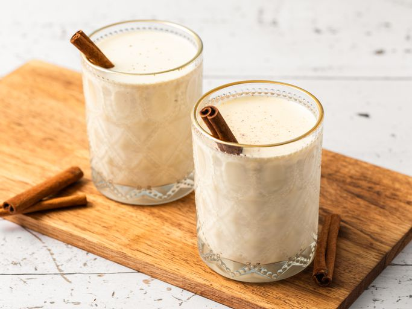

Eggnog

Description
This eggnog recipe for thick, creamy, and sweet eggnog with just the right amount of spice took me several years to perfect. The egg yolks are tempered for safety, and you can adjust the amount of rum to taste, or leave it out entirely so the whole family can enjoy this rich holiday treat. It's a bit of work to make, but well worth it. Once you taste it — you'll never serve store-bought eggnog again!
Ingredients
- Milk and light cream: This traditional eggnog recipe contains milk and light cream
- Spices and seasonings: You'll need cinnamon, cloves, vanilla extract, and nutmeg.
- Egg yolks: Egg yolks thicken the mixture, creating a decadent texture.
- Sugar : Of course, you'll need white sugar for this dessert-like beverage.
- Rum: Spike your eggnog with light rum or leave it as-is for a non-alcoholic treat
Steps
- Heat the milk, cinnamon, cloves, and a dash of vanilla. Boil, then remove from heat.
- Whisk the egg yolks, then whisk in the sugar.
- Gradually whisk the hot milk mixture into the egg mixture.
- Cook the mixture over medium heat until thick, then strain to remove the cloves.
- Cover with foil and bake.
- Stir in the cream, rum, remaining vanilla, and nutmeg. Refrigerate overnight.